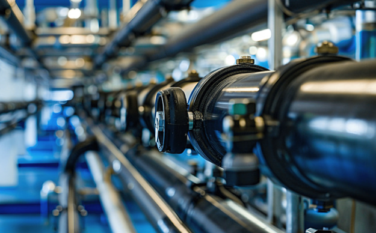

Saved Services
Your saved pipeline inspection services appear here. You can quickly access them when scheduling new inspections.

Pipeline Inspection
Advanced smart pigging inspection technology used to detect corrosion, leaks and structural defects in pipelines.
Recommended Service
Integrity Monitoring
Continuous monitoring solutions that analyze pipeline health, detect risks and improve operational safety.
Popular ServiceWhy Save Services?
Saving services allows you to quickly access the inspection solutions you frequently use. This helps streamline the booking process and makes it easier to schedule future pipeline inspections.
- Quick access to frequently used inspection services
- Faster service booking
- Better service management
- Improved workflow efficiency